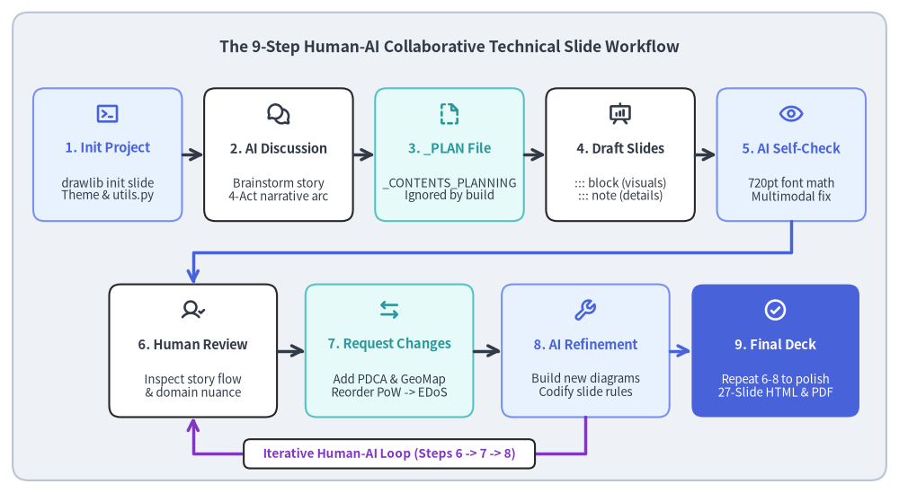
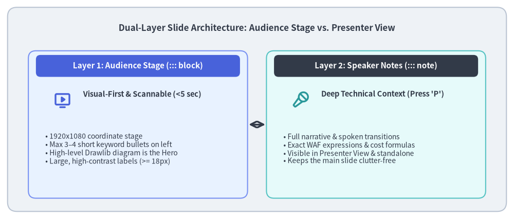
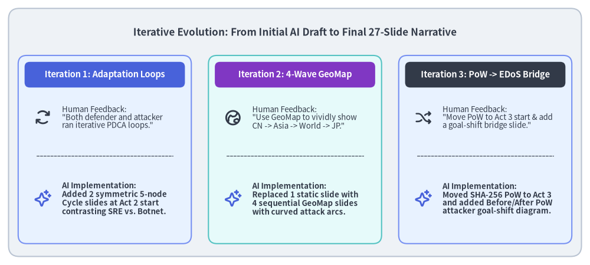

Case Study: Creating Technical Slide Decks with AI Agents
Engineering postmortems, architecture reviews, and conference talks demand clear visual storytelling. However, creating technical slide decks in traditional GUI presentation tools (PowerPoint, Keynote, Google Slides) suffers from severe friction: engineers spend hours manually dragging boxes, aligning arrows, and copy-pasting screenshots that immediately become impossible to version-control or refactor when the narrative evolves.
Drawlib's Slide Deck Project (slide) transforms presentation authoring into a declarative, Git-tracked workflow where 16:9 HTML/PDF slide decks, speaker notes, and pure-Python technical diagrams are co-developed by humans and AI coding agents.
This case study documents the real-world 9-step iterative workflow used to build "Surviving a 300M+ Req/Day DDoS & EDoS Attack"—a 27-slide serverless security postmortem deck (docs/slide_ddos_incident_response_src/) featuring cloud architecture diagrams, sequence protocols, data charts, 5-step adaptation cycles, and multi-wave geographic attack maps (GeoMap).

Source Code
from drawlib.canvas import save, setup
from drawlib.icons import phosphor
from drawlib.lines import line, lines
from drawlib.shapes import rectangle
from drawlib.styles import Styles
from drawlib.text import text
setup(width=142, height=78)
rectangle((71.0, 39.0), width=138.0, height=74.0, style=Styles.Neutral.patch(shape_r=2.5))
text(
(71.0, 70.5),
"The 9-Step Human-AI Collaborative Technical Slide Workflow",
style=Styles.DarkBold.patch(text_size=12.5),
)
# Row 1: Steps 1 to 5 (Scaffolding -> Planning -> Generation -> AI Self-Review)
row1 = [
(17.0, "1. Init Project", "drawlib init slide\nTheme & utils.py", phosphor.terminal_window, Styles.PrimaryNeutral, Styles.PrimaryBold),
(44.0, "2. AI Discussion", "Brainstorm story\n4-Act narrative arc", phosphor.chats_circle, Styles.White, Styles.DarkBold),
(71.0, "3. _PLAN File", "_CONTENTS_PLANNING\nIgnored by build", phosphor.file_dashed, Styles.SecondaryNeutral, Styles.SecondaryBold),
(98.0, "4. Draft Slides", "::: block (visuals)\n::: note (details)", phosphor.presentation_chart, Styles.White, Styles.DarkBold),
(125.0, "5. AI Self-Check", "720pt font math\nMultimodal fix", phosphor.eye, Styles.PrimaryNeutral, Styles.PrimaryBold),
]
for cx, title, desc, icon_fn, cstyle, tstyle in row1:
rectangle((cx, 53.5), width=23.5, height=21.0, style=cstyle.patch(shape_r=1.8))
icon_fn((cx, 60.0), width=3.8, style=tstyle)
text((cx, 54.5), title, style=tstyle.patch(text_size=10.5))
text((cx, 48.0), desc, style=Styles.Dark.patch(text_size=9.5))
for x0, x1 in [(28.8, 32.2), (55.8, 59.2), (82.8, 86.2), (109.8, 113.2)]:
line((x0, 53.5), (x1, 53.5), arrow_head="->", style=Styles.DarkBold)
# Orthogonal connector from Step 5 down to Row 2 (Step 6)
lines(
[(125.0, 43.0), (125.0, 38.0), (30.5, 38.0), (30.5, 33.0)],
arrow_head="->",
style=Styles.PrimaryBold,
)
# Row 2: Steps 6 to 9 (Human Review <-> AI Iteration Loop -> Final Deck)
row2 = [
(30.5, "6. Human Review", "Inspect story flow\n& domain nuance", phosphor.user_check, Styles.White, Styles.DarkBold),
(61.5, "7. Request Changes", "Add PDCA & GeoMap\nReorder PoW -> EDoS", phosphor.arrows_left_right, Styles.SecondaryNeutral, Styles.SecondaryBold),
(92.5, "8. AI Refinement", "Build new diagrams\nCodify slide rules", phosphor.wrench, Styles.PrimaryNeutral, Styles.PrimaryBold),
(122.5, "9. Final Deck", "Repeat 6-8 to polish\n27-Slide HTML & PDF", phosphor.check_circle, Styles.PrimaryFlat, Styles.WhiteBold),
]
for cx, title, desc, icon_fn, cstyle, tstyle in row2:
is_final = (cstyle == Styles.PrimaryFlat)
rectangle((cx, 22.5), width=26.5, height=21.0, style=cstyle.patch(shape_r=1.8))
icon_fn((cx, 29.0), width=3.8, style=tstyle)
text((cx, 23.5), title, style=tstyle.patch(text_size=10.5))
d_st = Styles.White.patch(text_size=9.5) if is_final else Styles.Dark.patch(text_size=9.5)
text((cx, 17.0), desc, style=d_st)
line((43.8, 22.5), (48.2, 22.5), arrow_head="->", style=Styles.DarkBold)
line((74.8, 22.5), (79.2, 22.5), arrow_head="->", style=Styles.DarkBold)
line((105.8, 22.5), (109.2, 22.5), arrow_head="->", style=Styles.PrimaryBold)
# Iterative feedback loop U-connector between Step 8 and Step 6
lines(
[(92.5, 12.0), (92.5, 6.2), (30.5, 6.2), (30.5, 12.0)],
arrow_head="->",
style=Styles.AccentBold,
)
rectangle((61.5, 6.2), width=46.0, height=4.6, style=Styles.White.patch(shape_r=1.0))
text((61.5, 6.2), "Iterative Human-AI Loop (Steps 6 -> 7 -> 8)", style=Styles.AccentBold.patch(text_size=9.8))
save()
1. Overview of the 9-Step Collaborative Workflow
Rather than expecting a single "one-shot" prompt to produce a finished 27-slide technical presentation, the most effective workflow pairs AI speed in layout and diagram generation with human domain insight and narrative direction:
| Step | Actor | Phase | Key Action & Deliverable |
|---|---|---|---|
| 1 | Human / AI | Project Creation | Scaffold slide project (drawlib init slide) with theme, styles.py, and utils.py helpers. |
| 2 | Human + AI | Content Discussion | Discuss the raw incident facts, technical bottlenecks, and target audience takeaways. |
| 3 | AI Agent | _PLAN Specification |
Write _CONTENTS_PLANNING.md (prefixed with _ so the slide compiler ignores it). |
| 4 | AI Agent | Initial Slide Generation | Author multi-act .md slides using Dual-Layer separation (::: block visuals vs. ::: note prose). |
| 5 | AI Agent | Autonomous Self-Review | Render images/PDF, verify 720pt slide font scaling, and fix text clipping or arrow collisions. |
| 6 | Human | Human Review | Review the compiled HTML/PDF deck for narrative pacing, visual impact, and domain accuracy. |
| 7 | Human | Change & Addition Requests | Request deeper visuals (e.g. GeoMap waves, PDCA cycles) and structural reordering (PoW $\rightarrow$ EDoS). |
| 8 | AI Agent | AI Refinement & Rules | Implement new slides, re-verify layouts multimodally, and codify best practices into _rules/. |
| 9 | Human + AI | Iterative Convergence | Repeat Steps 6–8 across 2–3 fast cycles until the presentation is publication-ready. |
2. Steps 1–3: Scaffolding, Discussion & The _ Planning File Pattern
2.1. Step 1: Scaffolding the Slide Project (drawlib init slide)
Every slide deck starts by initializing a structured Drawlib slide project:
uv run drawlib init slide docs/slide_ddos_incident_response_src --style google
This generates the complete presentation infrastructure:
styles.py: Configures the color palette (GoogleStyles) and language-appropriate fonts.utils.py: Provides reusable presentation helpers (draw_page_number(),draw_chapter_divider(),draw_curved_agenda(),draw_kpi_cards()).build.sh/serve.sh: Scripts to compile the interactive HTML deck (*_html/index.html), vector PDF (*.pdf), and standalone PNG assets (*_images/).
2.2. Step 2: Structuring the Narrative Arc with AI
Through interactive dialogue, the raw chronological events of the DDoS/EDoS incident were organized into a 4-Act Story Arc:
- Act 1 — The Incident Onset: 10 years of peaceful operation on a
$10/moVPS, migration to serverless Google Cloud Run, cache-busting TTS requests causing a 4–5x weekly bill spike, and why naive origin clamping (max-instances=1) caused a 504 outage for real users. - Act 2 — Perimeter WAF & Evasion Loops: The competing 5-step adaptation loops of defender and attacker, deploying GCLB + Cloud Armor, why geo-blocking failed across 4 proxy waves, and how bots reverse-engineered static JS tokens in 3 hours.
- Act 3 — SHA-256 PoW & The EDoS Pricing Trap: Stopping unauthorized TTS CPU theft with an asymmetric SHA-256 Proof-of-Work challenge—which caused the attacker to pivot to a 300M req/day volumetric flood that triggered a
$225/day($6,750/mo) Cloud Armor request evaluation fee crisis. - Act 4 — Multi-Layered Edge Victory: Midnight emergency teardown of GCLB, migration to flat-rate Cloudflare Pro (
$20/mo), log forensics separating cloud VMs from residential HTTP/1.1 proxies, the 5-layer defense architecture, and AI botnet profiling.
2.3. Step 3: Creating an Underscore-Prefixed Plan (_CONTENTS_PLANNING.md)
Before generating 20+ slide files, the AI agent writes a comprehensive slide-by-slide blueprint into _CONTENTS_PLANNING.md inside the project root.
Drawlib's slide compiler enforces two automatic file-filtering rules:
- Underscore Prefix Rule (
_*): Any file or directory whose name starts with_(such as_CONTENTS_PLANNING.md,_drafts/, or_assets/) is automatically excluded from slide compilation. - Repository Metadata Exclusion: Standard repository documentation files (
README.md,CLAUDE.md,AGENTS.md,GEMINI.md) are also excluded automatically.
This allows the team to version-control detailed planning documents and project READMEs directly inside slide_ddos_incident_response_src/ without polluting the compiled presentation deck.
3. Steps 4–5: Dual-Layer Authoring & Autonomous AI Self-Review
3.1. Step 4: Dual-Layer Slide Architecture (::: block vs. ::: note)
A common failure mode in technical presentations is cramming full paragraphs of explanation onto the visible slide stage—creating "walls of text" with tiny fonts.
To prevent this, Drawlib codifies the Dual-Layer Presentation Principle (uv run drawlib rules show slide-guide):

Source Code
from drawlib.canvas import save, setup
from drawlib.icons import phosphor
from drawlib.lines import line
from drawlib.shapes import rectangle
from drawlib.styles import Styles
from drawlib.text import text
setup(width=136, height=58)
rectangle((68.0, 29.0), width=132.0, height=54.0, style=Styles.Neutral.patch(shape_r=2.5))
text(
(68.0, 50.5),
"Dual-Layer Slide Architecture: Audience Stage vs. Presenter View",
style=Styles.DarkBold.patch(text_size=12.2),
)
# Left Card: Visible Slide Stage (::: block)
rectangle((36.5, 25.0), width=58.0, height=39.0, style=Styles.PrimaryNeutral.patch(shape_r=2.0))
rectangle((36.5, 40.5), width=54.0, height=5.8, style=Styles.PrimaryFlat.patch(shape_r=1.2))
text((36.5, 40.5), "Layer 1: Audience Stage (::: block)", style=Styles.WhiteBold.patch(text_size=11.0))
phosphor.monitor_play((16.5, 31.5), width=4.8, style=Styles.PrimaryBold)
text((22.0, 33.0), "Visual-First & Scannable (<5 sec)", style=Styles.DarkBold.patch(text_size=10.5, halign="left"))
text(
(12.0, 18.5),
"• 1920x1080 coordinate stage\n"
"• Max 3–4 short keyword bullets on left\n"
"• High-level Drawlib diagram is the Hero\n"
"• Large, high-contrast labels (>= 18px)",
style=Styles.Dark.patch(text_size=10.0, halign="left"),
)
# Center Divider
line((65.8, 25.0), (70.2, 25.0), arrow_head="<->", style=Styles.DarkBold)
# Right Card: Presenter Console (::: note)
rectangle((99.5, 25.0), width=58.0, height=39.0, style=Styles.SecondaryNeutral.patch(shape_r=2.0))
rectangle((99.5, 40.5), width=54.0, height=5.8, style=Styles.DarkFlat.patch(shape_r=1.2))
text((99.5, 40.5), "Layer 2: Speaker Notes (::: note)", style=Styles.WhiteBold.patch(text_size=11.0))
phosphor.microphone_stage((79.5, 31.5), width=4.8, style=Styles.SecondaryBold)
text((85.0, 33.0), "Deep Technical Context (Press 'P')", style=Styles.DarkBold.patch(text_size=10.5, halign="left"))
text(
(75.0, 18.5),
"• Full narrative & spoken transitions\n"
"• Exact WAF expressions & cost formulas\n"
"• Visible in Presenter View & standalone\n"
"• Keeps the main slide clutter-free",
style=Styles.Dark.patch(text_size=10.0, halign="left"),
)
save()
3.2. Step 5: Autonomous AI Self-Review & Block-Width Typography Math
After generating the initial slides, the AI agent runs an autonomous multimodal review (uv run drawlib rules show review-guide).
A critical insight discovered and codified during this case study is the Block-Width-Aware Slide Typography Standard. Because Drawlib exports every figure at a base physical width of 10 inches = 720pt (setup(width=W, height=H) only changes coordinate grid units), the final on-slide pixel size of any diagram label depends on the width of the ::: block (X, Y) (Width, Height) container where the image is placed:
$$\text{Rendered Slide Font Size (px)} = \text{text_size} \times \frac{\text{Block Width (px)}}{720}$$
To ensure diagram labels never look tiny next to 26px slide body prose on a 1920×1080 stage, the AI agent enforces minimum text_size thresholds based on block width:
| Slide Block Archetype | Typical ::: block Width |
Scale Factor ($\text{Width}/720$) | Standard Label text_size (~18–22px) |
Header / Metric text_size (~21–28px) |
Absolute Floor (>= 16px) |
|---|---|---|---|---|---|
| Narrow Column (KPI Cards, Donut) | 650–800px |
0.90× – 1.11× |
16.0 – 20.0 |
20.0 – 30.0 |
14.5 |
| 2-Column Diagram (Right Visual Pane) | 900–1100px |
1.25× – 1.53× |
12.5 – 15.0 |
14.5 – 16.5 |
11.5 |
| Full-Width Canvas (Wide Table / Flow) | 1600–1760px |
2.22× – 2.44× |
11.5 – 13.5 |
13.5 – 15.5 |
10.0 |
By inspecting the compiled PDF pages via view_file, the agent automatically detects and repairs visual defects—such as shifting an L-bend FlowDiagram edge label (xy_shift=(14.0, 3.0)) so it sits cleanly on the horizontal arrow segment, or adjusting PieChart(hole_ratio=0.44) so donut slice percentages never collide with the center metric.
4. Steps 6–9: Human Review & Iterative Evolution
Once the AI agent completes its initial self-corrected build, the human author reviews the deck and guides high-level structural and visual improvements. In the DDoS postmortem project, three key iterations transformed the deck from a good draft into a compelling narrative:

Source Code
from drawlib.canvas import save, setup
from drawlib.icons import phosphor
from drawlib.lines import line
from drawlib.shapes import rectangle
from drawlib.styles import Styles
from drawlib.text import text
setup(width=138, height=62)
rectangle((69.0, 31.0), width=134.0, height=58.0, style=Styles.Neutral.patch(shape_r=2.5))
text(
(69.0, 54.5),
"Iterative Evolution: From Initial AI Draft to Final 27-Slide Narrative",
style=Styles.DarkBold.patch(text_size=12.2),
)
cards = [
(
24.5,
"Iteration 1: Adaptation Loops",
"Human Feedback:\n\"Both defender and attacker\nran iterative PDCA loops.\"",
"AI Implementation:\nAdded 2 symmetric 5-node\nCycle slides at Act 2 start\ncontrasting SRE vs. Botnet.",
phosphor.arrows_clockwise,
Styles.PrimaryNeutral,
Styles.PrimaryFlat,
),
(
69.0,
"Iteration 2: 4-Wave GeoMap",
"Human Feedback:\n\"Use GeoMap to vividly show\nCN -> Asia -> World -> JP.\"",
"AI Implementation:\nReplaced 1 static slide with\n4 sequential GeoMap slides\nwith curved attack arcs.",
phosphor.globe_hemisphere_east,
Styles.SecondaryNeutral,
Styles.AccentFlat,
),
(
113.5,
"Iteration 3: PoW -> EDoS Bridge",
"Human Feedback:\n\"Move PoW to Act 3 start & add\na goal-shift bridge slide.\"",
"AI Implementation:\nMoved SHA-256 PoW to Act 3\nand added Before/After PoW\nattacker goal-shift diagram.",
phosphor.shuffle,
Styles.PrimaryNeutral,
Styles.DarkFlat,
),
]
for cx, title, fb_text, ai_text, icon_fn, cstyle, hstyle in cards:
rectangle((cx, 27.0), width=40.5, height=44.0, style=cstyle.patch(shape_r=2.0))
rectangle((cx, 44.5), width=37.5, height=6.0, style=hstyle.patch(shape_r=1.2))
text((cx, 44.5), title, style=Styles.WhiteBold.patch(text_size=10.5))
icon_fn((cx - 14.5, 34.5), width=4.2, style=Styles.DarkBold)
text((cx - 10.0, 34.5), fb_text, style=Styles.Dark.patch(text_size=9.5, halign="left"))
line((cx - 16.0, 25.5), (cx + 16.0, 25.5), style=Styles.Dark.patch(line_width=0.8, line_style="dashed"))
phosphor.sparkle((cx - 14.5, 15.5), width=4.2, style=Styles.PrimaryBold)
text((cx - 10.0, 15.5), ai_text, style=Styles.DarkBold.patch(text_size=9.5, halign="left"))
save()
4.1. Iteration 1: Adding Symmetric 5-Step Adaptation Loops (Cycle)
- Human Review (Steps 6–7): Reviewing the cat-and-mouse progression in Act 2, the author noted that both the defender and the attacker were operating via iterative feedback loops (PDCA / OODA):
- Defender's 5 Steps: (1) Inspect attack traffic reaching origin $\rightarrow$ (2) Identify shared bot tells $\rightarrow$ (3) Design zero-false-positive filter $\rightarrow$ (4) Apply setting $\rightarrow$ (5) Measure effectiveness.
- Attacker's 5 Steps: (1) Analyze normal user access flow $\rightarrow$ (2) Pick low-cost, high-damage vector $\rightarrow$ (3) Launch parallel multi-pattern probes $\rightarrow$ (4) Compare
200vs.403/429responses to infer WAF rules $\rightarrow$ (5) Concentrate full flood on the unblocked blind spot.
- AI Execution (Step 8): The agent added two consecutive slides at the start of Act 2 (
02_defender_cycle.mdand03_attacker_cycle.md) using identical 5-node pentagonalCyclegeometries so flipping between them visually highlights the symmetry of the two competing loops. To avoid repeating theCycleshape later in Act 4, the agent simultaneously refactored Slide 26 (05_threat_actor_profile.md) into a 3-row forensic comparison card stack.
4.2. Iteration 2: Upgrading to a 4-Slide GeoMap Attack Sequence
- Human Review (Steps 6–7): Originally, the failure of geographic IP blocking was summarized on a single slide using a 4-stage
ChevronProcess. The author requested usingdrawlib.smartarts.GeoMapacross multiple slides to vividly depict bots hopping across China $\rightarrow$ Neighboring Asian Countries $\rightarrow$ Worldwide (120+ Countries) $\rightarrow$ Domestic Japan as stepping stones. - AI Execution (Step 8): The agent replaced the single summary slide with a 4-slide visual sequence (
05_geo_wave1_china.mdthrough08_geo_wave4_japan.md) combiningGeoMap.World.Asia,GeoMap.World.All, andGeoMap.Countries.Japanwithlonlat_to_xy()and curved trajectories (line_curved) converging onto Tokyo (139.69, 35.69), complete with a 4-step progress indicator bar at the top of each map.
4.3. Iteration 3: Narrative Reordering & The Goal-Shift Bridge Slide
- Human Review (Steps 6–7): In the initial outline, Asymmetric SHA-256 Proof-of-Work was placed at the end of Act 2. During review, the author pointed out that SHA-256 PoW was the direct trigger for the attacker's pivot to EDoS—and requested moving PoW to the start of Act 3, followed by a light bridge slide explaining how the attacker's goal changed from "calling the TTS synthesis API directly" to "sneaking massive request volume through to the origin on any URL."
- AI Execution (Step 8): Because every slide in a Drawlib
slideproject is an independent, numbered Markdown file (01_section.md,02_pow_challenge.md,03_attacker_goal_shift.md, ...), reordering slides across chapters required only amvcommand and updating the chapter divider topics—followed by./docs/slide_ddos_incident_response_src/build.shto automatically renumber all 27 slides and re-verify the PDF.
5. Key Takeaways for Technical Slide Authoring
- Separate Planning from Compilation with
_Files: Always align on the story arc first using an underscore-prefixed planning file (_CONTENTS_PLANNING.md). Iterating on a markdown outline takes seconds and prevents wasted rendering cycles. - Enforce Dual-Layer Discipline (
::: blockvs.::: note): Keep the visible slide stage minimal (short bullets + large high-level diagrams) and put complex technical explanations, formulas, and spoken narrative inside::: notefor Presenter View. - Scale In-Diagram Typography to the Block Width:
Remember that a
720ptDrawlib canvas placed inside a narrow680pxcolumn renders text smaller than the same canvas placed across a1760pxfull-width block. Use the Block-Width-Aware Typography table (16.0–20.0ptfor narrow blocks,12.5–15.0ptfor 2-column blocks) and always inspect the compiled PDF viaview_file. - Use Sequential Slides for Dramatic Progression:
Rather than cramming a 4-stage geographic or architectural evolution into a single crowded slide, split it across consecutive slides with a shared coordinate frame and top progress bar (as demonstrated by the 4-wave
GeoMapsequence).